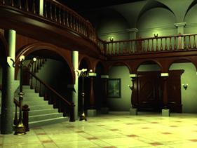
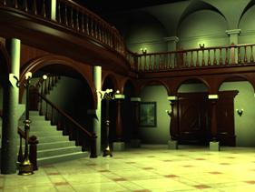

GDC2007 Submission
Is There Anything Comparable
to Spherical Harmonics But Simpler?
Besides this supplementary document, a webpage linking
with results, demo, and papers can be found at
PROPERTIES
OF SRBF
Local Support
Unlike the global support
nature of SH, SRBF is local support. This is useful because most lighting
information is only available on the upper hemisphere. We can think of each
radial basis function spans a region on the sphere (Figure 1). Therefore we need
to lay SRBF centers only on the upper hemisphere. If we know the trajectory of
our light sources (a path on the sphere), we can even drop those radial basis
functions that do not overlap with the light trajectory to significantly speed
up the rendering. This provides scalability.

Figure 1. The spherical function is approximated by the linear combination of differently oriented spherical radial basis function.
Rendering Efficiency
Another major advantage of
SRBF is that all radial basis functions are in the same form of a Gaussian
function. Therefore, the evaluation of radial basis function is just a lookup
to a single 1D table (the Gaussian curve as the SRBF is isotropic, Figure 2).
Note that fast evaluation of basis function is crucial to the efficient
rendering of local illumination like directional and point sources. While in
the case of SH, a fast evaluation of SH can be done by looking up multiple
tables stored in cubemaps (each cubemap stores the pre-evaluated values of one
basis function, SH basis are all distinct).

Figure 2. The evaluation of SRBF can be done by a dot product
and a lookup of this 1D table.
Environment Lighting
Like the orthonormal SH, the
rendering under distant environment in SRBF can also be performed by computing
a dot product of BRDF and environment light. To do so in the non-orthonormal
SRBF, we make use of the dual space concept. That is, we use SRBF to represent
the environment (or BRDF) and the dual space of SRBF to represent the BRDF (or
environment). During the rendering, the distant environment lighting can still
be obtained by simple dot product of 2 coefficient vectors.
Rotation
In SH, the rotation of a
k-dimensional SH vector can be computed by a recursively defined analytical
equation (function of Euler angles). It can be also written in a form of
multiplying a k x k matrix to the SH vector. Each element in this k x k matrix
can be computed analytical, but different elements have different equations.
They are inhomogeneous.
For SRBF,
rotation of a k-dimensional SRBF vector is also computed by multiplying a k x k
matrix. The difference is that each element of this k x k matrix can be easily
obtained by looking up a 1D table. In fact, the value of element(i,j) is the
spherical integration of two SRBFs, R_i and R_j. As SRBF is isotropic, this
spherical integration is only dependent on the angle (theta) in between the two
corresponding SRBF centers (theta is in between [0, pi]). And there is close form solution (direct
solution, no iteration). For speed up, we can keep a 1D table of
pre-integrated values indexed by theta.
For the
application of rotating the distant environment, it is always beneficial to
store the BRDF coefficient vectors (SH or SRBF) in global frame (sharing the
same coordinate system). Therefore, only one rotation (of the environment) is
needed. If the BRDF coefficient vectors (SH or SRBF) are defined in the local frame,
the environment coefficient vectors (SH or SBRF) has to be rotated for each
vertex. No matter it is SH- or SRBF- encoded, such rendering is not efficient.
Here we want to
point out that, the rotation complexity of SRBF is not inferior to SH. But the
construction of k x k matrix is simpler (just looking up 1D table).
Squeezing SRBF Coefficients
Since there is a need to
store the SRBF coefficient vectors along with the vertices in memory for
rendering purpose, further compression on SRBF coefficients is needed. We will
show that the estimated SRBF coefficients obtained by our methods are noise-proof,
i.e. they can be lossy compressed to a very small size, without much visual
artifact. Such compact solution is important when squeezing many data into the limited
GPU memory.
Some Results
The following images show
some screen shots of our realistic rendering with complex lighting effects
including caustics, and shadowing.
All examples below are rendered in real-time. The real-time demo program
of Figure 5 can be found at
/software/rbfgdc/rbfgdc/demolightmap-1.0b.zip
 

Figure 3. House.


Figure 4. Ring.


Figure 5.
Caustics cast by the crystal angel.


Figure 6. Diffuse teapot
illuminated in a HDR environment (Grace).
{kind=link}
{kind=link}
Figure 7. An anisotropic
teapot illuminated in a HDR environment (Grace).
References
1.
T.
T. Wong, C. S. Leung and K. H. Choy, "Lighting Precomputation Using the
Relighting Map", Shader X3: Advanced Rendering with Direct X and
OpenGL, Edited by
2.
C.
S. Leung, T. T. Wong, P. M. Lam and K. H. Choy, "An RBF-based Image
Compression Method for Image-based Rendering", IEEE Transactions on Image Processing,
Vol. 15, No. 4, April 2006, pp. 1031-1041. [PDF]